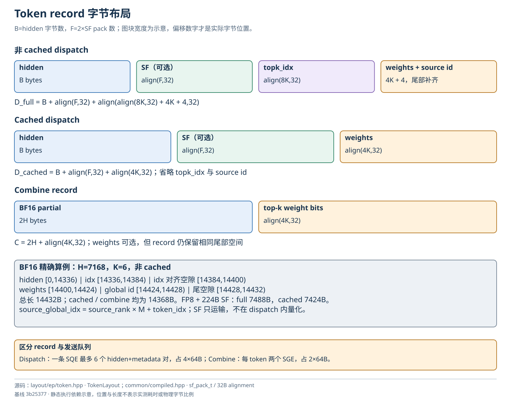
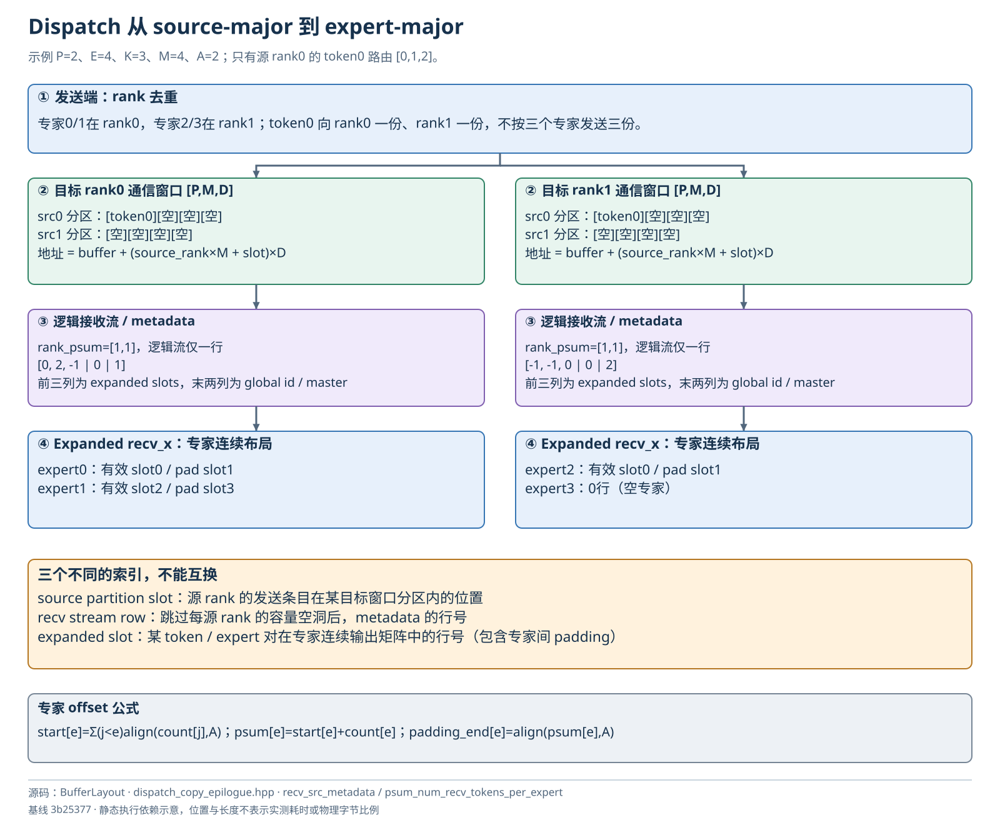
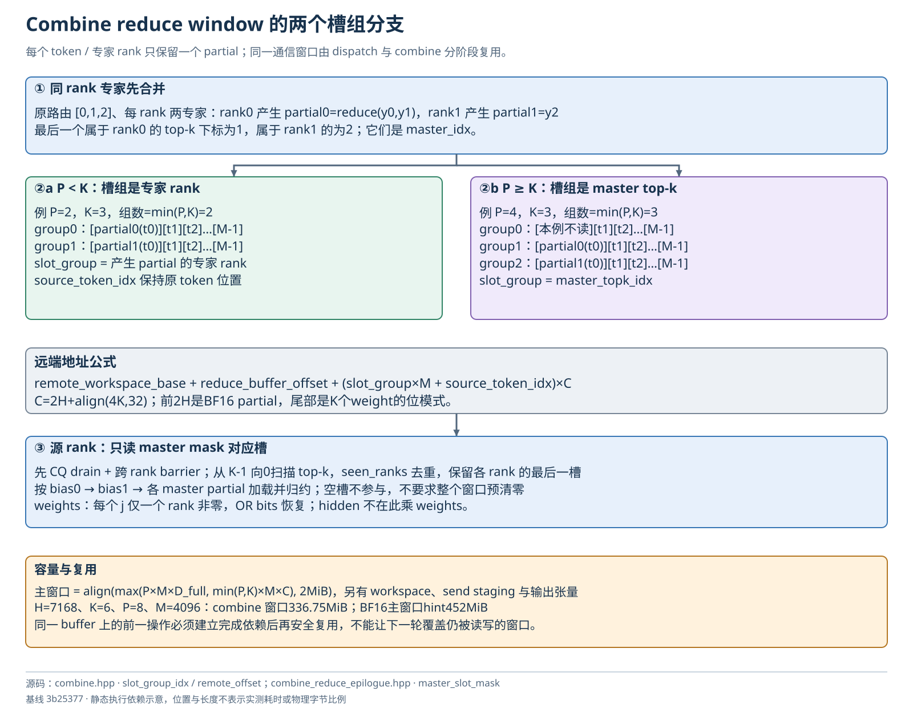

内存布局与算例
执行与布局图解
图中箭头表示代码依赖，阶段位置不代表实测时间；内存块不按字节比例。点击 SVG 链接可查看矢量原图。
Token record 字节布局

打开 SVG 矢量图 · 打开 PNG 原图
Dispatch 从 source-major 到 expert-major

打开 SVG 矢量图 · 打开 PNG 原图
Combine reduce window 的两个槽组分支

打开 SVG 矢量图 · 打开 PNG 原图
四个 kernel 的 UB 分区与空间复用
打开 SVG 矢量图 · 打开 PNG 原图
符号与地址空间
| 符号 |
含义 |
| P、E、L |
rank 数、总专家数、每 rank 专家数 E/P |
| T、M |
本地实际 token 数、所有 rank 约定的最大 token 数 |
| H、K、A |
hidden 元素数、top-k、专家对齐粒度 |
| S、F |
scale pack 数、scale 字节数 F=2S |
| B |
hidden 字节数，BF16 为 2H，FP8 为 H |
| align(x,n) |
向上对齐到 n 的倍数 |
| V |
本次使用的 AIV 数 |
GM 包含输入输出张量、对称通信窗口、send staging、handle metadata；UB 是每个 AIV 独立的片上空间；host workspace 是设备映射的 CPU 内存。不要把 UB（Unified Buffer）与 UBMEM（通信协议/远端可达路径）混为一谈。
对称分配的总布局
SymmetricMemory::ptr = workspace
+0 EPSignals（sizeof，2MiB 对齐）
+num_workspace_bytes context->buffer
[dispatch 窗口 或 combine reduce 窗口，复用同一块]
[可选 LB storage]
+num_gpu_buffer_bytes local_rdma_storage_ptr（EP 此处无额外容量）
总申请逻辑长度为 workspace_bytes + align(gpu_buffer_bytes + rdma_storage_bytes, 2MiB)。EP 的 gpu_buffer_bytes 含主 buffer 和 LB。get_buffer_size_hint() 返回主窗口大小，不包含 workspace、host workspace、普通 PyTorch 张量、send staging 和底层通信队列。见 csrc/kernels/comm/api.hpp:16。
通过 get_sym_ptr 做远端字段寻址：remote_common_base + (local_field - local_common_base)。HCCL/HCOMM 注册的是整个对称分配，因此窗口偏移也相对于 workspace 基址构造。
Dispatch TokenLayout
假设 hidden 字节数满足搬运对齐约束，非 cached 记录为：
| 字段 |
相对 record 字节偏移 |
有效长度 |
| hidden |
0 |
B |
| sf packs |
B（有 SF 时） |
F，物理占 align(F,32) |
| topk_idx |
B+align(F,32) |
8K，后补到 align(8K,32) |
| topk_weights |
B+align(F,32)+align(8K,32) |
4K |
| source global index |
上一项起点 +4K |
4 |
| 尾 padding |
global index 后 |
metadata 总长度补到 32B |
D_full = B + align(F,32) + align(align(8K,32) + 4K + 4,32)
D_cached = B + align(F,32) + align(4K,32)
C = 2H + align(4K,32) # combine record
F=0 时 SF 段长度为零。cached 不再运输 index/global id；Host 的容量检查与 metadata staging 分配仍按完整 record 做保守估算，设备按 cached 布局解释。源码 TokenLayout 的 hidden 偏移假设对齐，不能由公式推导出任意 H 都合法。见 deep_ep/include/deep_ep/layout/ep/token.hpp:9。
H=7168、K=6 时：
| record |
hidden |
scale |
metadata/weights |
总字节 |
| BF16 dispatch 非 cached |
14336 |
0 |
96 |
14432 |
| BF16 dispatch cached |
14336 |
0 |
32 |
14368 |
| FP8 dispatch 非 cached，128 分组 scale |
7168 |
224 |
96 |
7488 |
| FP8 dispatch cached，同上 |
7168 |
224 |
32 |
7424 |
| BF16 combine |
14336 |
0 |
32 |
14368 |
BF16 非 cached record 的精确字段为 hidden [0,14336)，idx [14336,14384)，idx 对齐空隙 [14384,14400)，weights [14400,14424)，source id [14424,14428)，尾空隙 [14428,14432)。这不是 480B/32B flag 交织格式。
Dispatch 窗口与接收输出是两种布局
在目标 rank 上，通信窗口地址为：
buffer + (source_rank*M + source_local_slot)*D
形状概念上是 [P,M,D]，source partition 内前 count[source] 条有效，剩余为容量。逻辑 recv stream 按 source-rank 顺序拼接各有效前缀，用 rank psum 跳过容量空洞。
最终 recv_x 是 expert-major 的普通连续矩阵，每专家有效行之后有 padding。通信窗口的 source_local_slot 不是 expanded slot；handle 负责维护映射。
窗口：[src0 的 M 槽][src1 的 M 槽] ... [srcP-1 的 M 槽]
↓ 跳空洞形成逻辑接收流
metadata：[recv0][recv1] ... [recvR-1]，每行 K+2 个 int32
↓ 按本地专家展开
recv_x：[expert0有效|padding][expert1有效|padding] ...
EPHandle 张量
| 字段 |
dtype / shape |
含义 |
topk_idx |
int64 [T,K] |
保留原路由引用，combine 和 cached 必需 |
dst_buffer_slot_idx |
int32 [T,K] |
发往目标 rank 的 source partition slot，去重/无效为 -1 |
dst_gsge_idx |
int32 [T,K] |
AIV 内 SGE pair 序号；本地/去重/无效为 -1 |
psum_num_recv_tokens_per_rank |
int32 [P] |
每源 rank 去重接收数 inclusive sum |
psum_num_recv_tokens_per_expert |
int32 [L] |
expert_start + 当前有效 count |
num_unaligned_recv_tokens_per_expert |
int32 [L] |
实际专家数 |
recv_src_metadata |
int32 [R_alloc,K+2] |
K 个 expanded slot、global source id、最后 local top-k 下标 |
num_recv_tokens_per_expert_list |
Python list |
CPU sync 时每专家补齐长度；无 sync 可为空 |
未同步 Host 时 Python num_recv_tokens/num_expanded_tokens 是分配容量，不一定是真实数量。deterministic 模式还保留排序前 metadata 的副本，并重写当前 metadata 的 expanded slots。
Combine 窗口
概念形状为 [min(P,K),M,C]，每条 record 的前 2H 字节为 BF16 partial，后面 align(4K,32) 字节为 top-k weight bits。
P≥K 时槽组等于 master top-k 下标；P<K 时槽组等于产生 partial 的专家 rank。源 token 位置固定为原 token_idx，无需收齐后再次进行 token 排序。不同专家 rank 的 master 槽互异，从而避免写冲突。
窗口只填实际参与的槽；最终读取通过原路由的 rank 去重 mask 限定，空槽可以保留旧数据。不能绕开 metadata 对整个 [min(P,K),M,H] 盲目求和。
EPSignals 布局
deep_ep/include/deep_ep/layout/ep/workspace.hpp:8 定义：
| 字段 |
声明容量 |
用途 |
| CommonSignals |
peer_ptrs[256]、barrier/grid 状态 |
对称地址表与同步 |
| local_expert_histogram |
[2048][128] int |
每专家独占 512B sector，降低同 sector 竞争 |
| remote_expert_histogram |
[2048] int |
接收各 rank 专家计数归约 |
| local_rank_histogram |
[64][256] int |
每 AIV 发往各 rank 的 count/前缀 |
| remote_rank_histogram |
[256] int |
每源 rank 的接收 count |
| host_rank_expert_count |
[256+2048] int |
host 映射通知布局 |
| epilogue_expert_counter |
[64*2048] int |
活动 [V,L] 行前缀计数，按 L 紧凑解释 |
结构整体 alignas(2MiB)。声明最大容量不是实际 kernel 支持范围；dispatch persistent worker 另有限制 E≤512，arrival count 也另有限制。
UB 布局和阶段复用
- Dispatch issue：histogram/rank prefix、entry→rank/slot、SGE inverse map、Jetty/peer 描述、local-copy 标志；其后 metadata stage 与 hidden stage。metadata storage 与 hidden storage 分开，保护不同流水的生命周期。
- Dispatch epilogue：两份 expert state、4×32KiB histogram scratch；完成 histogram 后该空间复用为 token copy stage；另有两个 metadata stage 和零值 buffer。事件总数上限与 UB 容量共同限制 stage 数。
- Combine issue：Jetty/peer、remaining token、next recv slot、两级 8-token metadata；剩余划为最多 32 个 hidden ring slot。
- Combine epilogue：每 ring slot 为 hidden+weights record；需容纳
min(P,K)+2 个潜在输入，其中 +2 留给 bias。
UB 总量来自运行时设备查询，模板静态断言验证特定 H/K/P/M/V 组合。调大 M 或减小 V 会增大单核 entry 表及 SQ 需求，不能只检查总通信窗口容量。
容量计算实例
取 P=8、M=4096、H=7168、K=6，按源码公式计算：
| 项目 |
字节数 |
MiB |
BF16 dispatch 主窗口 P*M*14432 |
472907776 |
451 |
| 实际测试 FP8 SF 的 dispatch 窗口 |
245366784 |
234 |
| FP8 size hint 的保守 dispatch 窗口 |
252706816 |
241 |
combine 窗口 min(P,K)*M*14368 |
353107968 |
336.75 |
| BF16 hint：max 后按 2MiB 对齐 |
473956352 |
452 |
| FP8 hint：max 后按 2MiB 对齐 |
354418688 |
338 |
FP8 hint 用 S=ceil(H/32) 估算 SF pack 数，比测试的两个 int16/128 hidden 多一倍。该例 FP8 的最终主窗口由 combine 决定，所以并非 BF16 容量简单减半。
以均衡满 top-k 为例，本地平均 expanded 有效行约 P*T*K/P=T*K=24576，但不是每次都相等；no-sync 上界使用 M 与 min(K,L)，可能显著大于平均值。recv_x、metadata、send_buffer、weights、确定性排序临时内存均额外占用显存。该算例为公式演算，不是 allocator 或 NPU 的实测峰值。
可手工追踪的路由例子
取 P=2、E=4、L=2、K=3、M=4、A=2；仅用于解释索引（真实 kernel 的 H 等仍应满足断言）。rank0 部署专家0/1，rank1 部署专家2/3。设只有 rank0 的 token0 有路由 [0,1,2]，其余 token/rank 无有效路由。
dispatch 向 rank0 发送一份 token，向 rank1 发送一份，而不是三份。rank0 expert counts 为 [1,1]，expert starts 为 [0,2]，expert psum 为 [1,3]，补齐后的总输出为 4 行：有效行0和2，padding 行1和3。rank1 counts 为 [1,0]，starts 为 [0,2]，psum 为 [1,2]，总输出为2行。
| 接收 rank |
metadata 的 K 个 slots |
global id |
master |
| rank0 |
[0,2,-1] |
0*M+0=0 |
1 |
| rank1 |
[-1,-1,0] |
0 |
2 |
combine 在 rank0 把专家0和1的结果局部相加得到 partial0；rank1 只有专家2，直接以其结果发送 partial1。P<K，所以两个 partial 分别写回源 rank0 的 group0/token0 与 group1/token0。最终 source rank0 加和这两个 partial，并可加入 bias。
若改为 P=4、E=8、K=3，同路由 [0,1,2] 仍落在 rank0 与 rank1，但 P≥K，partial0 写 master group1，partial1 写 master group2；group0 不参与。这个分支解释了为什么 reduce_buffer 的第一维既不能一概叫 rank，也不能一概叫 top-k。